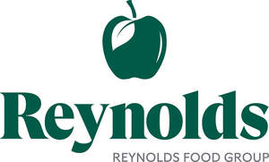
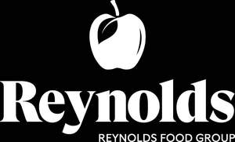

Trade Mark Journal No.2025/048 28 November 2025
UK00004294432 13 November 2025 (29,30,31,32)
Mark 1

Mark 2

Mark 3
Mark 4
- Class 29
- Processed fruit and vegetables, including sliced, chipped, shaped, mixed and mashed fruit and vegetables; preserved, frozen, dried and cooked fruits and vegetables; prepared snacks made from fruit and/or vegetables; desserts made from fruit and/or yoghurt; chilled and frozen fruit and vegetables; meat; fish; Fish, prepared fish, processed fish; seafood, prepared seafood, processed seafood; poultry; game; dairy products; foods prepared from processed fruit and vegetables, chilled and frozen fruit and vegetables; meat; poultry; game; prepared meat; processed meat and dairy products; meat extracts; jellies, jams, compotes; eggs; milk, cheese, butter, yoghurt and other milk products; oils and fats for food.
- Class 30
- Bread, bread products, Flour and preparations made from cereals, bread, pastry; confectionery; frozen fruit desserts; rice, pasta and noodles; tapioca and sago; chocolate; ice cream, sorbets and other edible ices; sugar, honey, treacle; yeast, baking-powder; salt, seasonings, spices, preserved herbs; vinegar, sauces and other condiments; ice (frozen water).
- Class 31
- Raw and unprocessed agricultural, aquacultural, horticultural and forestry products; Fresh fruit and vegetables.
- Class 32
- Non-alcoholic beverages; mineral and aerated waters; fruit beverages and fruit juices; syrups and other non-alcoholic preparations for making beverages.
Reynolds Catering Supplies Ltd
Representative: WP Thompson